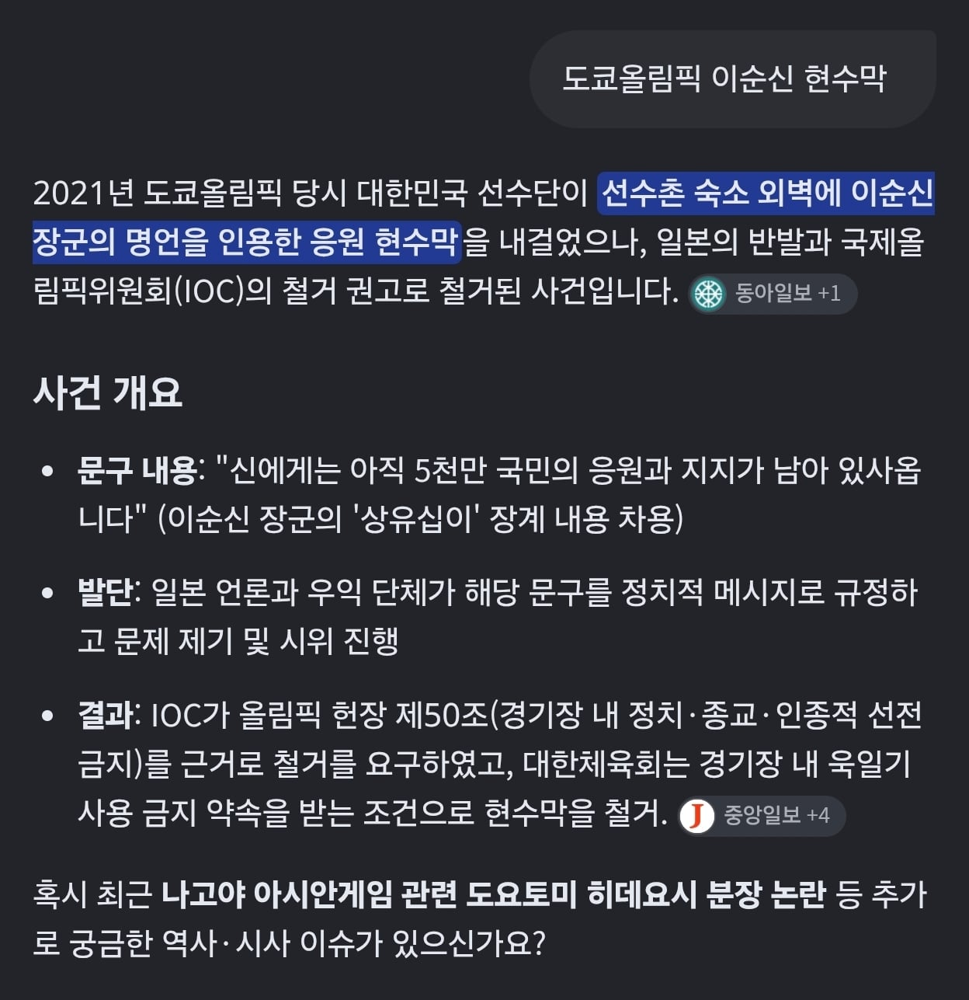
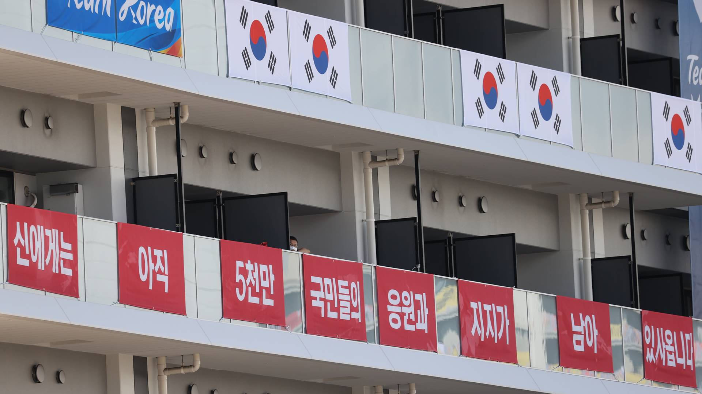
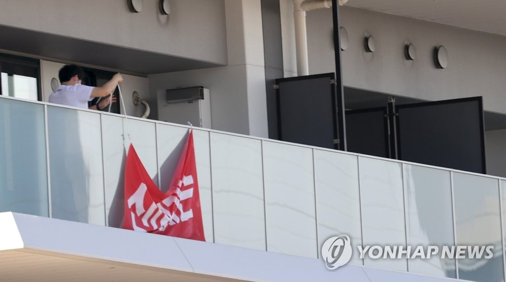

오다 노부나가, 도요토미 히데요시, 도쿠가와 이에야스는
나고야 삼걸이라 일컫는 역사속 인물들이므로
나고야 올림픽에서 홍보로 사용하지 않는게 오히려 이상하다! 는
냉철한 이성을 빛내는 사람들이 있는데



전에 지들이 먼저 지랄함
오다 노부나가, 도요토미 히데요시, 도쿠가와 이에야스는
나고야 삼걸이라 일컫는 역사속 인물들이므로
나고야 올림픽에서 홍보로 사용하지 않는게 오히려 이상하다! 는
냉철한 이성을 빛내는 사람들이 있는데



전에 지들이 먼저 지랄함
패시브거든요 발동해야죠
발동조건..!! 완료
메롱 먼저 했잖아
해군함정에 기함을 뜻하는 수자기를 걸은걸 해딸대가 이순신을 연상시킨다면서 지랄한 전례도 있음
해딸대 ㅋㅋㅋㅋㅋ
지들 욱일기는 "일본제국 이전에도 쓴거니 문제없음! 전범기 아님! 느그들 피해의식으로 트집잡지 마셈!" 이지랄하더니 수자기에는 지랄발광을 한다고? ㅋㅋㅋㅋㅋㅋㅋㅋㅋ
해딸대 새끼들은 욱일기 즈그 함정에 걸고다님
국기하강시간에 애국가 즈그들이 갑자기 틀어서 거기다 경례할뻔함 시발
새끼.... 기함!
진짜 일본 무료대변인들이네ㅋㅋㅋㅋㅋ
대변인변호인이라고 하면 좋아함
원종이라고 하자 앞으론
똥인
원종이 새끼들 원래 그럼 ㅋ
인간 취급해주기 싫으니까 대변 까지만 하자
오다노부나가는 통수만 안맞았으면 전국제패할 인물이었고
도쿠가와이에야스는 막부 군웅이었는데
도요토미히데요시는 그저 오다따라다니던 꼬바리에서
운좋게 오다가 다 해놓은거 먹어 태합되고는
되도않는 망상펼치면서 중국정벌한다고 쌩쇼하다가
조선조차 못넘고 뒤진 늙은이아님?
신발 데워주는건가 그걸로 뜬 근본없는 마굿간 종놈 색히 ㅋㅋ
운이 찾아왔을때 잡을 수 있는 능력이 있어야지만 잡을 수 있기에 능력은 출중한거 같은데. 다만 한국입장에선 쉽새끼 맞음 ㅇㅇ
말도 못할 불가촉개씹천민에서 일본열도 1인자까지 오른 인물이긴 한데 아무래도 어릴때 잘못 쳐맞아서 정신이 이상했겠지
우리 입장에서 쓰레기긴하다만 입지전적인 개인사를 가진 인물인건 맞는지라 2000년대인가 2010년대까지는 일본에서 소위 말하는 개천에서 용난다는 케이스로 도요토미가 꼽혀서 인기있는 인물이었다고 하는데 근래에 들어서는 말년 뻘짓과 더불어서 도요토미가 했던 온갖 잔혹한 행동들이 부각되면서 인기투표할때마다 떨어지는 중임
다쳐발린 애들이니까 괜찮지 않을까
오키나와 전통 복장도 야구장에서 퇴장 금지시킴 ㅋㅋㅋ 이새끼들은 내로남불 ㅈㄴ 심한 민족임
지들은 욱일기들어도 괜찮고 한중이 항의하면 일본의 전통 국기라고 주장함 ㅇㅇ
도요토미가 저 도시 출신임.
그리고 도요토미가 주인공인 대하사극이 일본에서 인기리에 방영중.
아시안컵은 개막식조차 중계안할정도로 일본에서 관심밖임.
사극 드라마 버스라도 타려고, 도요토미로 어그로 끌려다 찐빠낸거.
일본의 역사 우민화 정책과, 지자체의 무능이 콜라보된 사건임.
나고야 잼버리 ㅋㅋㅋㅋㅋ 단어가 웃기네
근데 운영만보면 잼버리랑 비비긴 할듯
내로남불이었네 ㅋㅋ
음습한새끼들
나도첨에 나고야출신 유명인들아님? 의갼냈다가 이순신명언을 내려버린 사건찾아보고 일럼일렇지 박음 ㅋㅋㅋㅋ
'불멸의 이순신' 드라마에서 임진왜란 당시 일본군의 중요 후방 거점으로 나고야 성이 등장하는데 지금 올림픽을 개최하는 나고야시와는 관계없고, 옛날 사가현에 있던 옛지명이니까. 현재 나고야시와 도요토미는 관계가 없음.
하지만 갖다쓰려는 찐빠는 지금 나고야ㅋㅋㅋㅋ
근데 나고야시에서 태어난 건 맞으니까...
현재 나고야시 나고야역 바로 앞 도로명이 태합로에 그 옆에 생가터도 있던데
애초에 현재의 나고야 시가 만들어진 계기 자체도 아들을 통해 만든 도쿠가와 가문의 거점임
아이치현 자체가 출생지이자 초기 활동 장소이고
이예야스 가문이 나고야를 중심으로 만들기 전 중심지는 기요스였음
나고야성 공식 자료에서도 이에야스가 성을 축조하면서 기요스의 마을 자체를 나고야로 이전시켜 새로운 성하도시를 만들었다고 설명하는데
이악물고 관계없다 하면 현실이 달라짐? ㅋ
국대 훈련일정 차질이야 종목가리지 않고 왕왕 일어나던 일임. 괜찮다는게 아니라 벌어질 수도 있는 일인건 아는데
저거하고 특히 태극기 막은건 진짜 50년 사람없이 썩은 단칸반지하방처럼 음습하고 곰팡이내 났음
왜 시절부터 이어진 특유의 삐뚫어진 자아가 느껴졌음
동조센의 헛발질에는 한없이 관대한 wwwwwww
뭐 원종이들이 좆지랄을 하거나 말거나 응 같은 맥락으로 항의했으니까 쳐 내려
히데요시는 좀???
아 도요토미를 카바친 한국애들이 있었다고
아하 또라이들이네 ㅋㅋㅋㅋㅋㅋㅋ
매 국제경기마다 등장하는 욱일기는 절대 언급안하는 원종이들ㅋㅋㅋ
그러네 우리는 들어줬네
순간 지지를 자지로 봤네
걍 다 비슷해
한국이 항의받아서 내렸으면 일본도 내리면 되겠네
나라 컬러가 간사 ㅋㅋㅋ
저거 가지고 먼저 지랄했으면 욕처먹어도 싸지 ㅋㅋㅋㅋ
어허 사회적인 화합을 위해 필요한 조치를 취한거라고
2021년이면 굳이 저런 짓 한것도 이해가 간다
왜본거지 ㅋㅋㅋ
ㅋㅋㅋㅋㅋ 내로남불